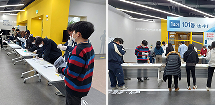
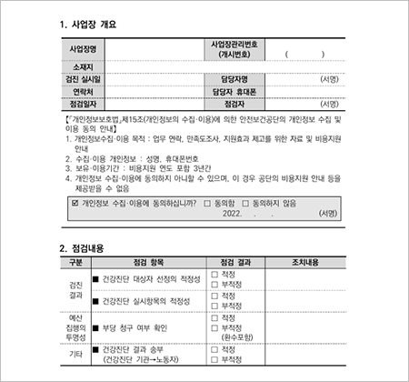
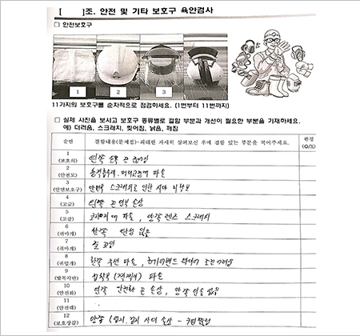
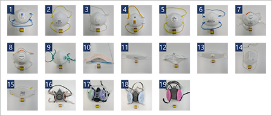
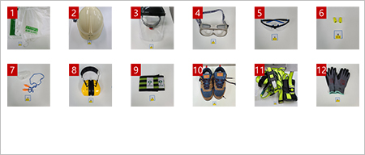
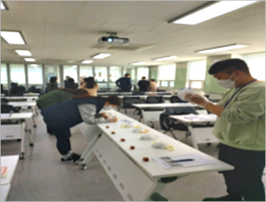
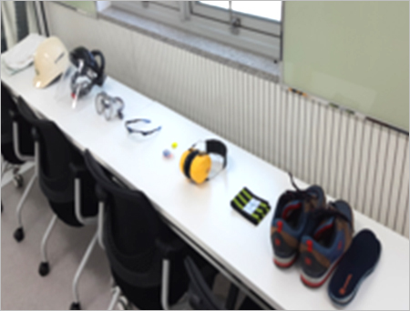
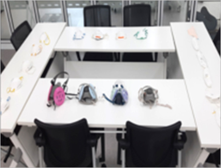

미래사회와 교육- 보호구 결함 찾기,
안전보건 실습 교육을 중심으로
글. 어원석
숭실대학교 안전보건융합공학과 교수
미래사회는 참으로 복잡하고 다양하며 늘 변화하는 사회이다. 그 속도와 넓이 그리고 깊이는 한치앞도 예측할 수 없다. 안전보건측면에서 생각해보면 더욱 심란하다고 할 수 있다. 이에 건강과 안전문화를 형성하는데 중요한 이정표의 역할을 하는 것이 바로 교육(교육방법과 매체)이다.
01미래 사회
첫째, 미래사회는 고령사회를 넘어 초고령사회이다. 심지어 한 기사 매체에서는 2045년에 태어난 사람은 400살까지 살며, 죽지 않는다(No die)라는 말을 한다. 둘째, 이혼, 사별, 독신, 산업재해 사망 등 원하든 원하지 않든 간에 초솔로사회가 된다. 셋째, 4차 혁명시대(초연결, 초지능혁명)라고 하여 전 세계를 하나로 모으고 로봇과 대화를 하고 실생활을 같이하는 시대이다. 또한 경계가 사라지며 기술과 지식이 12시간마다 2배로 증가하는 무서운 시대이다. 넷째, 인간이 생각의 힘이 무엇보다 요구되는 시대이다. 심지어 직업인에게 미래에 요구되는 역량 Top10을 보면 복합적 문제해결능력, 비판적 사고력, 창의력, 인적자원 관리능력, 대인관계능력, 감성지능, 결정력, 근무 방향성, 협상력, 융통성 등이며 최근에는 타 학문과 타 분야를 이해하는 능력과 소통, 팀웍이 강조되는 시대이다[출처 : 세계경제포럼]. 이에 미래사회는 평균의 개념을 탈피한 교육혁명시대라고도 일컫는다.
02안전보건교육의 현실 사회
교육인적자원부에서 “현재 기업에서 인재를 키워내고 있습니까?”라는 질문에 “그렇지 않다”가 75%이며 CEO들이 대학교육이 기업 현장 요구에 부합되지 않는 이유는 기업요구와 무관함(실무내용과 무관함)으로 거론하고 있다. 인력공단(NCS기반 국가기술자격 실기시험 평가방법 개발(산업위생분야)) 어원석 연구(2017)에 의하면 기사 94%가 현장에 즉시 투입이 불가능하며 실무 경험의 부족으로 현장 적응이 어려우며 이론적 지식만으로 실제 장비를 다룰 수 없다는 다수의 의견이 제시되었다. 다시 말해서 학교에서 배운 이론적 교육이 실무 안전보건교육에서 큰 도움이 되지 않는다는 결론이다.
우리의 현실은 새로운 치료제를 투여하는 적극적인 관리가 아니라 마지못해 무관심하게 진행되는 안전보건교육, 단가에 맞춰서 진행되는 안전보건교육, 부족한 예산 책정으로 어쩔 수 없이 시행되는 안전보건교육, 심지어 중대재해처벌법 시행으로 예산부족 등의 이유로 안전보건 교육비용을 깎는 것이 우선되고 안전보건교육의 의미와 근본의 배제된 채 테크닉만 강조하는 안전보건교육, 인문학과 설득이 없는 컨설팅과 교육, 근로자의 요구조사가 없는 안전보건교육, 흥미 없고 오래 기억될 수 없는 단순반복적인 교육, 기업의 참여가 매우 미흡한 교육시스템 등(Tophoj 2006, Martin and Hrivnak 2009/ Williams 2001 etc)으로 심각성이 지적된다.
03새로운 교육시스템이 요구되는 사회
1)미래사회와 2)안전보건교육의 현실사회에서 교육시스템과 교육매체의 변화가 요구되는 사회이다. 즉, 정답을 알려주는 것이 아니라 정답을 찾아가는 교육을 위해 다양한 교육의 매체와 방법을 제시해야 한다. 오늘날 우리 안전보건교육을 망치고 있는 기능인 양성교육에서 하루빨리 진정한 전인교육으로 전환하기 위하여 배우는 사람을 길러내는 교육이어야 한다. 또한 평균적으로 한 사람이 평생 7번 정도 직장을 바꾼다고 한다. 첫 번째 직장을 위한 교육은 물론 일곱 번째 직장을 위한 교육도 가능하도록 준비해야 한다.
한국경제신문에 의하면 교육을 하지 않으면 변화의 필요성도 변화하는 방법도 알지 못한 채 세월이 지나면서 좋지 않은 것들이 조직문화로 남는다고 한다. 우리 건강 및 안전문화를 생각해보자. 처음 일을 배우는 방식도 중요하지만 변화를 위해서 교육이 필요이다. 획일화된 교육시스템은 호기심과 흥미, 특기를 길러주기보다는 오히려 말살시킨다. 안전보건교육에서 호기심, 흥미가 없다면 우리는 직업병과 사고를 사전에 예방하는 전도사가 될 수 없을 것이다. 형식과 구조가 없는 자율안전보건 교육시스템으로 전환이 필요하다.
한국일보에서는 우리는 지금 평균의 시대에 살고 있다고 언급하였고 과연 동물의 왕은 사자인가? 오리인가? 의문을 가진다. 결론은 오리라고 말했다. 그 이유는 오리는 날기, 뛰기, 수영하기, 걷기 등 조금씩 할 수 있다고 하였다. 다시 말해서 전문가는 아니다. 평균의 개념을 강조하는 우리 교육을 비판하는 것이다.
안전보건은 교육인가? 훈련인가? 아니 교육이어야하는가? 훈련이어야하는가? 결론은 교육의 개념으로 더 강조가 되어야 하며 교욱과 훈련의 적절한 비율이 매우 중요하다. 교육은 형식과 구조에 의해 지배를 받는다. 그래서 이 어려운 시기와 혼란스러운 시대를 해결하고 헤쳐나가는 방법은 자율안전보건교육 시스템이 펼쳐져야 한다.
04개인보호구 실습 교육의 방법

[POSCO E&C 보호구 안전관리자 직무교육]
지금부터 개인보호구 실습 교육방법을 제시한다. 본 논문은 한국안전학회와 한국산업보건학회에 게재된 논문을 일부 정리한 것이다. 보건관리자 선생님들께서 많은 도움이 되었으면 한다. 논문에 정리된 교육방법과 매체는 선진국의 이론과 우리 실무현장에서 요구되는 근거를 기반으로 진행한 것이다. 2가지는 다음과 같다.
대상자의 특성과 요구를 파악
본질적, 공학적, 관리적 대책 및 보호구 착용을 제시하기 전에 그 조직의 작업공정과 대상자의 특성을 파악하고 요구사항을 조사한 후에 원하고 필요한 내용으로 교육을 진행하는 것이 선행되어야 한다.
개인보호구 안전보건 실습교육(안)
-
①제목은 Effects of Personal Protective Equipment Practice Education on the Effectiveness of Repeated Learning and Satisfaction (개인보호구 실습교육의 반복학습 효과와 만족도에 미치는 영향)-한국산업보건학회 논문(조대진, 어원석)
- ②
연구방법은 실습교육 진행 및 절차를 단계별로 진행하였으며 개인보호구 실습교육 내용은 독일 산재보험 조합(Deutschen Gesetzlichen Unfallversicherung, DGUV)의 산하단체인 노동보호 연구원의 운영 프로그램을 참고하였다. 교육참여자들은 교육 신청 시 교육 커리큘럼 공지 및 전반적인 개인정보에 대한 동의를 사전에 받아 실습교육을 진행하였다. 2차 반복 교육참여자는 1차 교육 이후 1년간 안전보건교육의 수강을 별도로 받지 않는 상황이었다.
-
1단계 : 실습교육을 위해 개인보호구를 준비하여, 테이블에 배치하였다. 실습지 내용 구성은 Figure 1와 2처럼 호흡보호구 19개종, 안전 및 위생보호구 12개종에서 각각 주요 결함요인을 찾도록 하였다. 반복학습은 1차와 2차 교육에 개인보호구의 결함요인, 순서 등 차이점을 두고 진행하였다. 호흡보호구 결함요인은 2차 교육에서 필터 미부착 및 파손, 머리 끈 고리없음 등을 다르게 배치하였다. 안전 및 위생보호구 2차 교육에서 보호의, 안전모, 귀마개, 안전화, 안전대 순서 등을 변경하여 1차 교육과 일부 차이점을 두었다.
-
2단계 : Figure 3(a)~(d)처럼 실습교육에 필요한 전반적인 진행 및 안내사항을 공지하였다.
-
3단계 : 실습교육 주의사항은 교육참여자의 안전 및 위생을 위해 사전에 충분히 설명을 하였으며, 특히 코로나 감염을 대비하였다. 정확한 테스트를 위해서 실습 전에 비닐장갑착용, 소속과 이름 기재, 명확한 단어로 기재, 실습대상 보호구 직접 착용금지, 개인보호구 검사 시 개인별 간격 유지 등을 안내하였다.
-
4단계 : 실습진행은 교육참여자가 스스로 개인보호구의 중요한 결함과 밀착방해요인을 찾도록 하였다. 호흡보호구에 대해서는 코크 립, 머리끈 파손, 배기밸브파손, 마스크 면체 찢어짐, 필터없음 등 주요 결함요인을 찾도록 하였다. 특히 호흡보호구는 얼굴 밀착이 중요하므로 밀착방해요인에 대한 결함을 찾도록 하였고 현장에서 부적합한 착용으로 유해물질에 쉽게 노출되는 원인을 체크하도록 하였다.
안전 및 위생보호구에 대해서는 보호의, 안전모, 귀마개, 귀덮개, 보호장갑, 고글, 안전화 등의 찢어짐, 스크래치, 끈 끊어짐, 지퍼, 신발끈, 바닥 깔창, 지저분함 등 결함 내용과 문제점을 스스로 찾아낼 수 있도록 하였다.
-
5단계 : 실습평가는 교육 종료 후 개인보호구 결함요인 등 결과를 공개하였으며, 실습지 수거 후 담당교수가 평가를 진행하였다. 실습지 점수 산출은 호흡보호구 실습문항이 총 19개이며, 안전 및 위생보호구 실습문항이 12개로 각 100점을 기준으로 점수를 산출하였다. 교육참여자의 실습지를 수거하고 담당교수가 모범답안을 공개 후 정답을 토대로 실습평가를 하였다. 호흡보호구는 문항당 5.27점, 안전 및 위생보호구는 문항당 8.34점으로 맞은 개수에 따라 점수를 산출한 후 각 점수에 10%를 곱하여 10점을 만점으로 점수를 재가공하였다.
-
6단계 : 실습종료 후 교육참여자 대상으로 교육만족도 설문지를 배포 후 수거하였다. 개인보호구 실습교육 만족도 조사는 강의 전문성(teaching professionalism), 업무 연관성(work relevance), 강의 태도(the attitude of the lecture) 분야에 대해 매우 만족한다 5점, 만족한다 4점, 보통이다 3점, 만족하지 않는다 2점, 전혀 만족하지 않는다 1점 등 5점 척도를 기준으로 답하도록 하였다.

(a) Respiratory PPE evaluation sheet

(b) Safety and hygiene PPE evaluation sheet
Figure 1. PPE evaluation sheet

(c) Types of respiratory PPE

(d) Types of safety and hygiene PPE
Figure 2. PPE practice paper contents

(b) Maintaining distance

(c) Placement of safety and hygiene PPE

(d) Placement of respiratory PPE
Figure 3. PPE practice training procedure
7단계 : Fig. 4처럼 다양한 결함(머리끈, 코클립 등)을 고려하여 호흡보호구 착용 후 “KOSHA GUIDE H-82-2020”의 4가지 동작에 따라 밀착도 검사를 진행하며 올바른 착용상태를 객관적인 수치로 평가한다. (KANOMAX제품: AccuFIT9000)
Figure 4. PPE practice training procedure